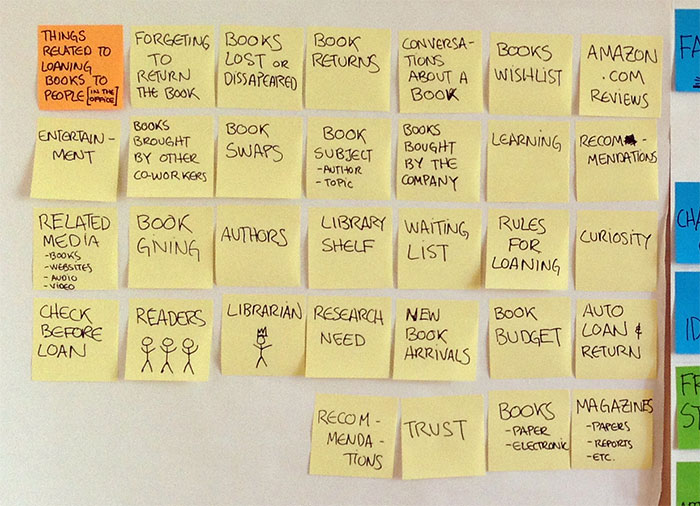
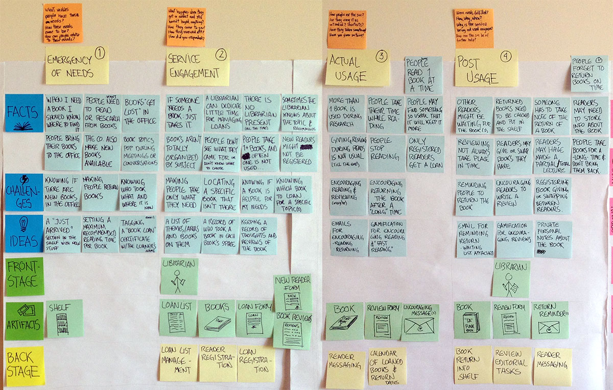
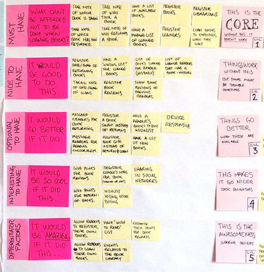
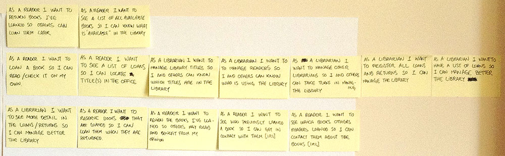
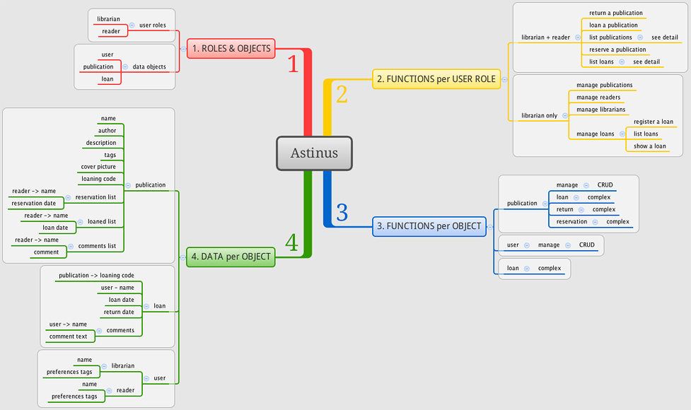
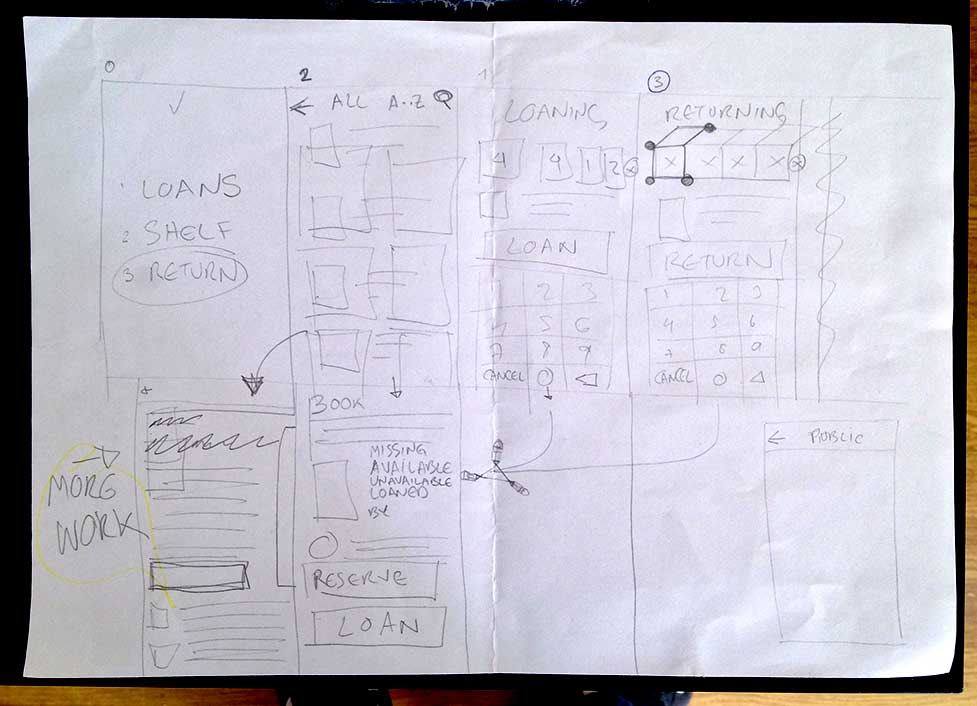
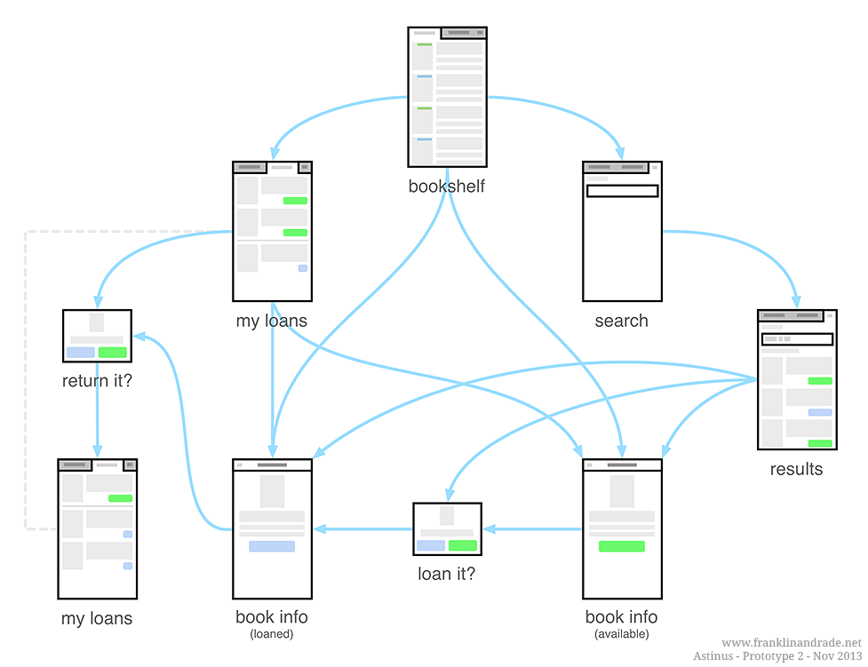
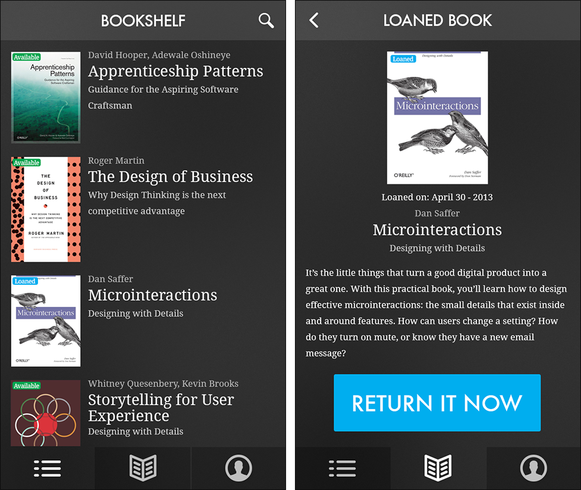

Astinus
Concept for a Library Management App
Design Thinking Analysis, Information Architecture, Wireframing, Interacion Specs, Prototyping
Keeping a small library at home / office can be complicated: creating group awareness of who has borrowed a specific book or magazine, what is it about, other reader's opinions, etc.
This concept's purpose is to define an easier way to allow groups of people to share and track any kind of publications.
Its vision is that Individuals can perform some of the functions of librarians by being aware of the library dynamics and other's needs; loaning, returning and commenting without a librarian role might be possible.
Process
Step 1
Braindump, writing all ideas in paper
Facts
- Began by annotating most of the things I had in my head, this would help me separate the facts & concepts by identifying which are obvious + redundant and which are relevant for the design problem.
- Writing out my vision and perceived facts helps me make new connections and ideas.
- Later, results are grouped in the 'Goals & Wishes' and 'Insights' lists.
Goals & Wishes, Insights
The goal here isn't quantity or quality, is exploration and discovery of possibilities:
- Feasible "corporate" goals.
- Key actors and roles in the product architecture.
- Possible key features in the product.
- Viable minimum marketable sellpoints.
Step 2
Concept Mapping, Visualising the components
Concept maps / Idea architecture
- Reader & Librarian roles.
- Loans and wish lists.
- Available publications list.
- The bookshelf.
- Publications reviews.
- The office / organization.
Why I made concept maps so early?
To help me articulate better the idea, to inform my intuition, for imagining technical and design constraints that could surface:
- Library's components are identified earlier.
- Became aware of multiple relationships between components.
- These relationships help shape user roles & system objects.
- Provides additional sense to previous and new insights, helps me visualize other ideas.
Step 3
Free listing, Inventory of related topics

Identifying ideas, relationships, values, etc.
This free list helped me by making explicit new stuff it was more a "keep track of this" list:
- What takes place between people interested in the same books / topics?
- Which things are relevant for buying / loaning books?
- Which values & beliefs determine the rules for loaning, returning, using books and publications?
- What is the most basic information handled when looking for a publication?
- Are social interactions relevant when loaning books?
- Which of them are more influential? When?
Step 4
Service/User Journey Development

Decided to structure the insight in 4 time-based stages:
- Emergency of needs: What takes place when readers have these needs? How these needs come to be? How can people relate to their needs?
- Service engagement: What happens when they get in contact and still havn't used anything? How they came to this service? Have they showed interest? How did it manifested in actions?
- Actual usage: How have people used the service? Are they using it as intended? Shortcuts? Have they taken any physical evidence with them?
- Post usage: Were user needs fulfilled? Why/When/How? Why is the service not being used at this time? How can it be of further help?
And for each stage I came to think of:
- Facts: discovered insights in form of factual information.
- Challenges: opportunities that could be translated into interaction flows and features.
- Ideas: ideas for: features, new interactions, information patterns, touchpoints, etc.
- Frontstage: the 'human face' of the process, direct interaction with people.
- Artifacts: devices, documents, technology, furniture, etc. that allow interacting with the process and system.
- Backstage: processes that the Public Users do not directly perceive but have influence in their experience
Step 5
Scenarios, Envisioning situations & outcomes
Made this proof-test scenarios after braindumping most of my ideas, writing allowed me to cover the different variations of events that could take place within the early idea.
Scenarios
These helped me visualize:
- Where can the library be accessed and from where, places and devices.
- What information could be relevant and in which cases.
- How could people communicate regarding events related to book loans, returns, waiting and such.
- Emotions and opportunities for channelling them.
- Possibilities regarding Reading & loaning habits.
- Real spaces and locations for the shelf, even Librarians.
- Modes and states, for publications and users.
- Additional Product / Service features.
First ideas for features
- Where can the library be accessed and from places and devices.
- What information could be relevant and in which cases.
- How could people communicate regarding events related to book loans, returns, waiting and such.
- Emotions and opportunities for channelling them.
- Possibilities regarding Reading & loaning habits.
- Real spaces and locations for the shelf, even Librarians.
- Modes and states, for publications and users.
- Additional Product / Service features.
Step 6
Core Features & prioritising with feature mapping

Feature Mapping
By analyzing the scenarios, journey matrix and concept diagrams, surfaced a general set features the service could have.
Each set goes from most essential to least essential, from basic functionalities to accesory delighters.
- Musts: This is the core of the service's functionality, without any of these features the system doesn't work.
- Nice to have: Things work and run without these, but there might be some inconveniences, perhaps perceived as rigidity.
- Optionals: These makes the experience go better by being available in the right moment.
- Interesting: Basic delighers, makes things feel nicer.
- Differentiators: This is the awesomeness, aimed at delivering superior delight.
Separating each feature into sets allowed a clearer picture of how the solution should interact and also be developed.
The next step is specifying what is to be built, and in which order.
Step 7
User stories, Defining actionable development work items

Core functionalities
Wrote the user stories for the first work sprint from the feature set called "Must Have", there are 8 features from this Core features set and 17 user stories for creating all this features.
- Information: Loan or return detail, Title detail, User detail, Reserve title for future loan, Review title.
- Listings: List of available titles, List of loaned titles, List of loan reservations per title, A title's previous readers list, List of recently loaned titles.
- Loaning & returning: Loan titles, Return loaned titles.
- Management: Manage library titles, Manage Reader users, Manage Librarian users, Manage loans and returns.
Step 8
Interaction Framework, Defining the interaction & basic architecture

Roles and Objects
Defined the User roles and Data objects to be used in the functional elements, not in software programming, but in Interaction design.
- User Roles: Functions that a person can assume when using the system.
- Data Objects: The things the users can create, manipulate, look for, etc.
This specifies the limits of what can be designed for, in form of discrete functions operated by a User Role on an Object.
Who, what, where & how...
For having a good grasp of what can be done when designing the functional interface elements I define these too:
- Functions per Role: Enumerates what can a Librarian user & a Reader user do.
- Functions per Object: Describes the actions that can be performed with Publications, Users and Loans.
- Data per Object: Specifies the information that belongs to Publications, to Users and to Loans.
Step 9
UI Sketches, Early user interface sketches

Step 10
Interactive Prototypes + Wireflow for Reader users
Interactive Prototype 1
This is the first prototype, decided to draw everything in my iPad.
Created the sketches using Adobe Ideas and an Ozaki O!tool Stylus R.
Exported the drawings, cropped them in Photoshop and uploaded them to Dropbox, then made an interactive version with Marvel App, it worked amazingly well for a service in open beta.
Tested this first version with a couple of friends, which made a few complains and comments and proceeded to make them into the second version...
Wireflow

Interactive Prototype 2
The second version includes the previously gathered feedback.
Edited everything in Adobe Ideas and PS, but the interaction flow wasn't totally clear, so this wireflow helped me understand what was missing.
It was made in Omnigraffle, took around 1.5 hours of work.
Made changes to the main "Bookshelf", added confirmations, and a more clear interaction flow, it took around 2 hours of work.
Step 11
Visual Design Concept

Now what?
How to proceed after this
Start code development tasks
- Create a basic HTML prototype of the wireflow for double checking navigation and features.
- Create the database for the app, taking the interaction framework objects & roles as a start (from Step 8).
- Start coding the functionalities for each user stories.
- Test with users & Iterate.
Continue interaction + visual design tasks
- Prototype all the interaction flows for the Interaction Framework (from Step 8)
- Define the visual design of the rest of the UI elements.
- Test with users & Iterate.